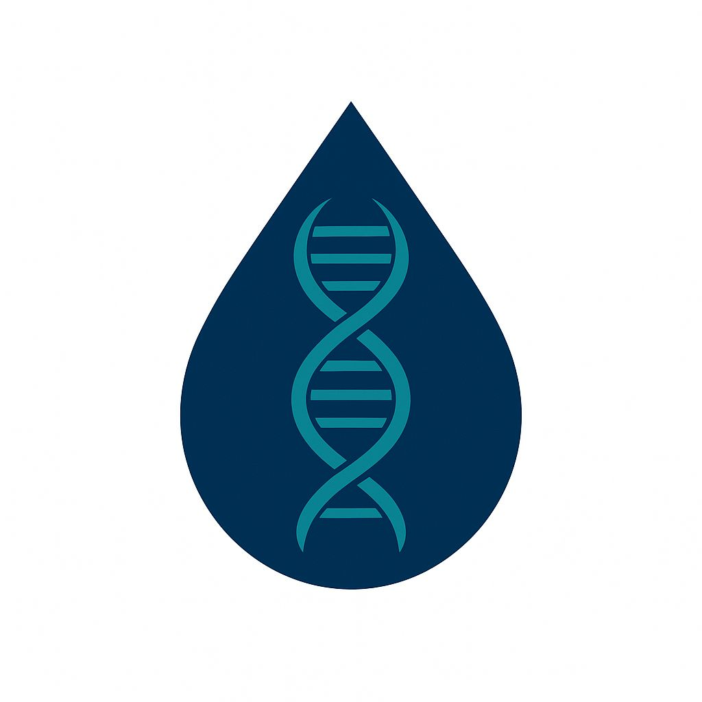

BUSINESSES • BRANDS • INSTITUTIONS
Building organizations, brands, and initiatives designed to create value, opportunity, and lasting impact.
My long-term vision extends beyond a single profession. It is the creation of an ecosystem of ventures, institutions, brands, and initiatives operating across healthcare, media, fashion, community development, and other strategic sectors.

A healthcare and diagnostics venture focused on quality laboratory services, healthcare innovation, diagnostics, and improved patient outcomes.
A fashion and branding company offering customized apparel, corporate branding, merchandise, and identity-driven designs.
A future-focused venture exploring opportunities across energy, petroleum, infrastructure, and industrial development.
A literary platform dedicated to poetry, storytelling, essays, reflections, and creative expression.
A social impact initiative focused on healthcare, education, youth empowerment, women empowerment, and community development.
Additional ventures and institutions are planned across healthcare, education, technology, media, and strategic development sectors.
"Strong institutions outlive individuals. Build what will continue creating value long after you are gone."